7 Generando un proyecto colaborativo con Git/GitHub
Aurora Labastida
10 de agosto de 2021
Para participar en los ejercicios en equipo de esta sesión danos por favor tu nombre de usuario de GitHub:
7.1 Colaborando mediante Git y Git Hub
Git y GitHub son muy útiles para la colaboración, pues permiten compartir copias de los proyectos (repositorios) y mantenerlas sincronizadas entre sí. Además, Git y GitHub registran los cambios hechos por cada colaborador y evitan que un programador sobrescriba sobre los cambios de otro.
Ensayaremos algunos principios de la colaboración con Git y GitHub mediante una serie de ejercicios.
7.2 Inicio del proyecto
A ti y a un colaborador les interesa la anatomía de gatos. Deciden colaborar para averiguar si hay diferencias significativas en el peso del cuerpo y del corazón entre gatos hembras y machos.
Uno de ustedes iniciará el análisis del cuerpo (equipo body) y el otro el análisis del corazón (equipo heart). Para saber en qué equipo estás:
- Ve a GitHub y usando tu cuenta crea un nuevo repositorio.
Equipo body: el nombre de tu repositorio será body
Equipo heart: el nombre tu repositorio será heart
Incluye un README.md y una descripción.
En tu computadora utiliza la terminal para crear una copia local del repositorio ( Obtén el link a tu repositorio )
- Equipo body
git clone https://github.com/mi_usuario/body- Equipo heart
git clone https://github.com/mi_usuario/heartNota En el contexto de esta clase terminal se refiere al entorno de línea de comandos de tu sistema operativo (alguna distribución de Linux o macOS) y GitHub se refiere al sitio web de GitHub (https://github.com/) o de tu cuenta de GitHub.
Abre RStudio y cambia la ruta de trabajo a la de tu repositorio. Para ello usa a setwd (en la consola de RStudio) o el menú de RStudio (ve a Session > Choose working directory > Choose directory…).
Añade un primer script de R para analizar los datos del cuerpo o del corazón de gatos. Para ello usa el menú de RStudio (ve a File > New File > R Script).
Equipo body: el nombre del script será body.R
Equipo heart: el nombre del script será heart.R
Usaremos el set de datos cats, incluído en el paquete MASS. En él se listan el sexo (Sex), peso corporal (Bwt) y peso del corazón (Hwt) de varios gatos.
library("MASS")
head(cats,3)## Sex Bwt Hwt
## 1 F 2 7.0
## 2 F 2 7.4
## 3 F 2 9.5Con la función str se observa que se incluyen tanto Hembras (F) como machos (M).
str(cats)## 'data.frame': 144 obs. of 3 variables:
## $ Sex: Factor w/ 2 levels "F","M": 1 1 1 1 1 1 1 1 1 1 ...
## $ Bwt: num 2 2 2 2.1 2.1 2.1 2.1 2.1 2.1 2.1 ...
## $ Hwt: num 7 7.4 9.5 7.2 7.3 7.6 8.1 8.2 8.3 8.5 ...- Contenido del script (ambos equipos)
library("MASS")
# Datos a analizar
head(cats)
summary(cats)- Guarda el script con el nombre antes mencionado.
Ahora cuentas con un repositorio en GitHub y con una copia local de dicho repositorio. El repositorio local está configurado para enviar cambios y recibir cambios desde el repositorio original u origin, es decir, el repositorio en GitHub.
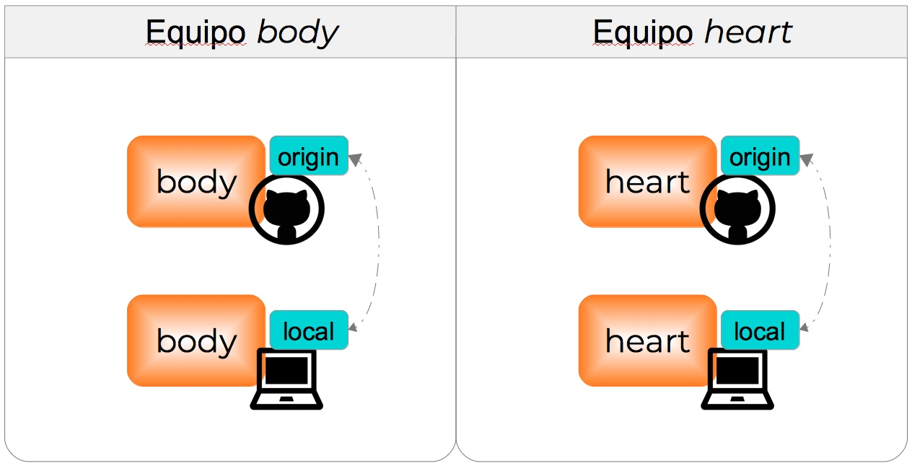
- En la terminal ve a tu repositorio y comparte los cambios con GitHub:
- Revisa si hay cambios en el arbol de trabajo
git status- Añade los cambios al siguiente commit.
git add *- Realiza el commit añadiendo un mensaje.
git commit -m "primer script"- Enviamos los cambios al GitHub, es decir, al repositorio origin
git push7.3 Inicio de la colaboración
Estamos trabajando en nuestro repositorio cuando nuestro colaborador nos pide que ayuda para su proyecto, que también tiene un repositorio de GitHub.
Identifica el usuario de GitHub de tu colaborador. Si eres del equipo heart tu colaborador es del equipo body y si eres del equipo body tu colaborador es del equipo heart.
Un fork de GitHub es una copia del repositorio de un colaborador que podemos administrar en forma independiente. Podemos actualizar el fork con los nuevos cambios del colaborador y sugerir cambios desde nuestro fork a su repositorio.
Ve al repositorio de tu colaborador en GitHub
- Si estás en el equipo body
https://github.com/colaborador/heart
- Si estás en el equipo heart
https://github.com/colaborador/body
Realiza un fork del repositorio de tu colaborador
Figure 7.1: Nota: si eres del equipo heart el nombre del repositorio será body
7.4 Actualizar un fork desde el repositorio upstream
Tu colaborador realizó un fork de tu repositorio para apoyarte en el análisis estadístico. Ahora tú sigues añadiendo cambios en tu repositorio. Así pues el fork que creó tu colaborador se irá quedando momentaneamente atrás de tu repositorio.
- Usando a RStudio añade nuevos cambios a tu repositorio original.
- Si eres del equipo body añade al script body.R:
# Estadísticas del cuerpo por sexo
tapply(cats$Bwt,cats$Sex,summary)- Si eres del equipo heart añade al script heart.R
# Estadísticas del corazon por sexo
tapply(cats$Hwt,cats$Sex,summary)- Ve a la terminal y envía los cambios a GitHub.
Nota sobre el análisis:
Ejecuta el script body.R o heart.R. El test estadístico t sugiere que el peso promedio del cuerpo y del corazón es significativamente distinto entre gatos hembras y machos.
Realizaste el fork del repositorio de tu colaborador para apoyarlo en el análisis estadístico. Después de ello tu colaborador siguió añadiendo cambios en su repositorio por lo que decides actualizar tu fork con sus cambios.
- Ve al fork que creaste en GitHub ( Link al fork ). GitHub te indica que el fork se encuentra detrás del repositorio de tu colaborador. Actualízalo con la opción Fetch upstream.
Figure 7.2: Nota: Si estás en el equipo heart el fork se llamará body
7.4.1 Sincronización desde la terminal
Sigues añadiendo cambios en tu repositorio. Tu colaborador tendrá que seguir sincronizando su fork con tus cambios.
- En RStudio añade otro cambio a tu repositorio original.
- Si estás en el equipo body añade al script body.R:
# Prueba estadistica
t.test(cats$Bwt~cats$Sex)- Si estás en el equipo heart añade al script heart.R:
# Prueba estadistica
t.test(cats$Hwt~cats$Sex)- Ve a la terminal y envía los cambios a GitHub.
Tu colaborador ha vuelto a hacer cambios en su repositorio. Esta vez decides crear una copia local del fork en tu computadora y actualizarla con los nuevos cambios.
- Usando la terminal clona el fork que está en tu cuenta de GitHub ( Link al fork ).
- Si eres del equipo body
git clone https://github.com/mi_usuario/heart.git- Si eres del equipo heart
git clone https://github.com/mi_usuario/body.gitNota
En tu cuenta de GitHub se encuentran el repositorio que tú iniciaste (de aquí en adelante tú repositorio) y el fork del repositorio de tu colaborador (de aquí en adelante el fork) y has creado copias locales de ambos. Dichas copias están configuradas para recibir y enviar actualizaciones desde y hacia el repositorio origin. En ambos casos el origin es el repositorio que está en tu cuenta de GitHub. En el caso de la copia local del fork también puedes añadir al repositorio de GitHub de tu colaborador como repositorio upstream (río arriba). De esta forma podrás recibir actualizaciones directamente de dicho repositorio.
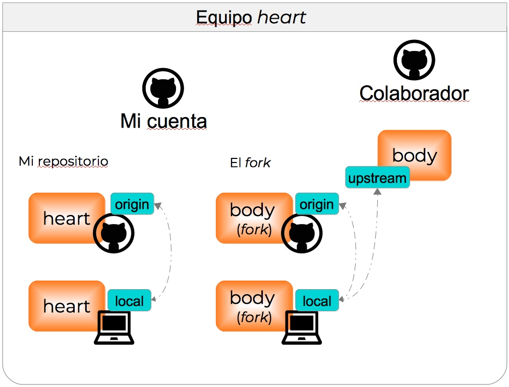
En la terminal entra al fork
Identifica el o los repositorios remotos a los que que está conectada esta copia local del fork.
git remote -v- Añade eñ repositorio de tu colaborador como upstream ( Link al repositorio de tu colaborador ):
- Si eres del equipo body
git remote add upstream https://github.com/colaborador/heart.git- Si eres del equipo heart
git remote add upstream https://github.com/colaborador/body.git- Observa cómo cambio la configuración de los repositorios remotos.
git remote -v- Revisa los cambios que ha hecho tu colaborador
git fetch upstream
git log -p HEAD..FETCH_HEAD- Ahora puedes añadir los cambios usando:
git merge upstream/mainO bien,
git pull upstream main- Nota que los cambios se añadieron a la copia local del fork, pero no al repositorio origin en GitHub. Para añadir los cambios en origin.
git push originAhora tu copia del fork, está sincronizada con el repositorio upstream y el repositorio origin.
7.5 Cambios desde un fork hacia el repositorio upstream
Tienes planeado trabajar en el fork para añadir una gráfica al proyecto de tu colaborador.
7.5.1 Trabajando con ramas
Git y GitHub permiten generar ramas. Cada repositorio tiene una rama principal (main), que muestra la versión principal del proyecto. Los colaboradores pueden generar nuevas ramas, que serán versiones separadas de main y trabajar en ellas sin que main se vea afectada durante el proceso.
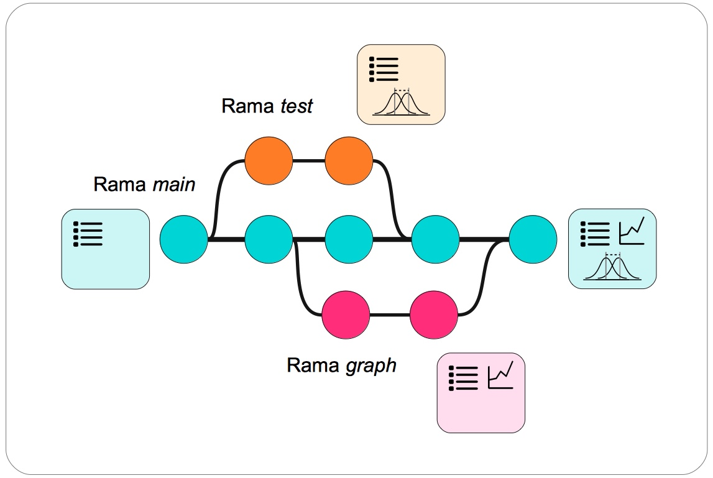
- Ve a la terminal y entra al fork. Observa las ramas actuales del repositorio
git branch- Crea una nueva rama graph que te servirá para añadir una gráfica al análisis.
git branch graph- Observa nuevamente las ramas.
git branch- Cambia a la rama graph.
git checkout graphAbre RStudio y establece al fork como directorio de trabajo.
Abre el script de R y haz una adición al análisis
-Si eres del equipo body abre el script heart.R y añade
#Gráficas del peso del corazón por sexo
boxplot(Hwt ~ Sex, data = cats)-Si eres del equipo heart abre el script body.R y añade
#Gráficas del peso del cuerpo por sexo
boxplot(Bwt ~ Sex, data = cats)Nota sobre el análisis:
Ejecuta el script body.R o heart.R. Las gráficas muestran una distribución del peso del cuerpo y del corazón distinta para gatos hembras y machos.
Guarda los cambios al script en RStudio
En la terminal añade los cambios en el fork mediante un commit.
Envía los cambios a al repositorio origin, creando una nueva rama.
git push origin graph7.5.2 Abrir un Pull Request
Para comenzar este proceso ve al fork que creaste en GitHub ( Link al fork )
- Ve al fork en GitHub. Observa que ahora existen dos ramas. Cambia a la rama graph
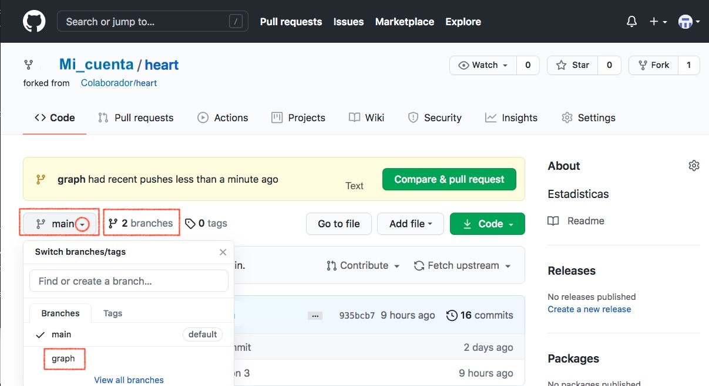
- Selecciona la opción Contribute y después Open pull request
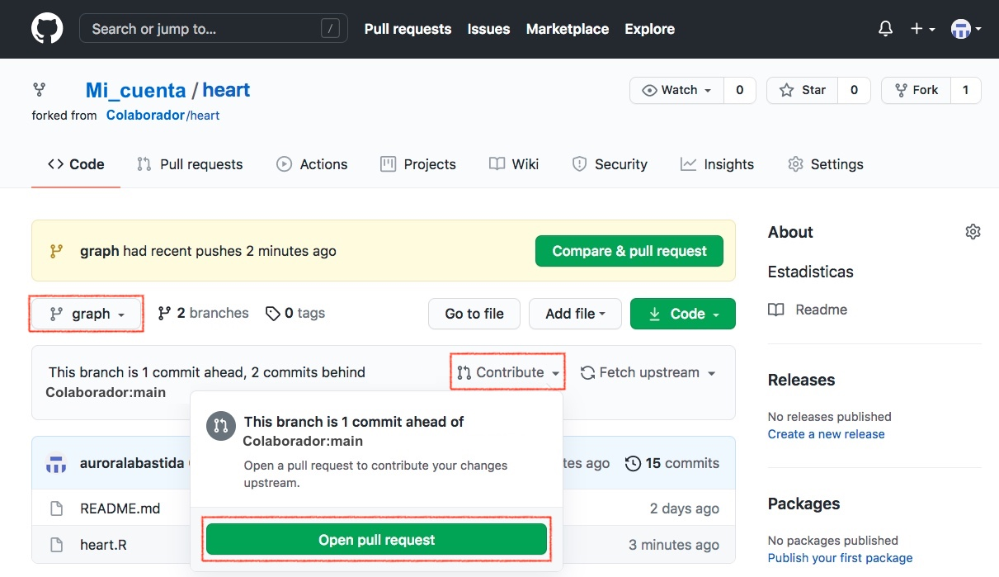
- Nota que has pasado del fork al repositorio upstream (el de tu colaborador). Abre el Pull Request dejando una nota.
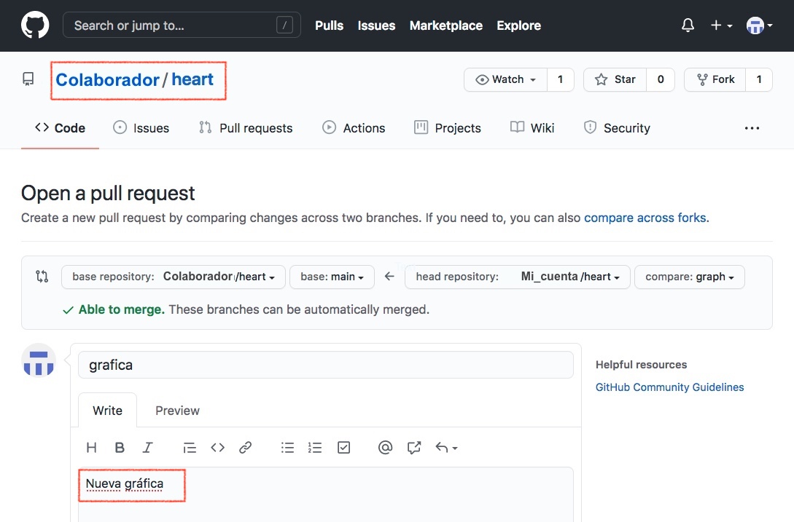
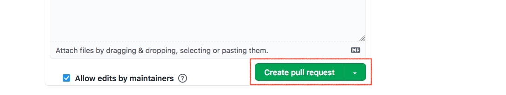
7.5.3 Aceptar un Pull Request
Tu colaborador ha enviado una contribución desde su fork hacia tu repositorio de GitHub. Ve a tu repositorio para aceptar su Pull Request.
- Ve a tu repositorio en GitHub, abre la pestaña Pull Requests y después el Pull Request de tu colaborador
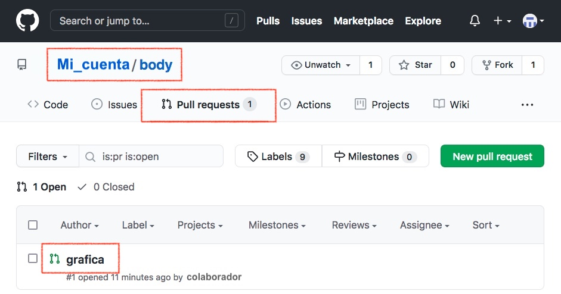
- En la nueva página selecciona Merge pull requests
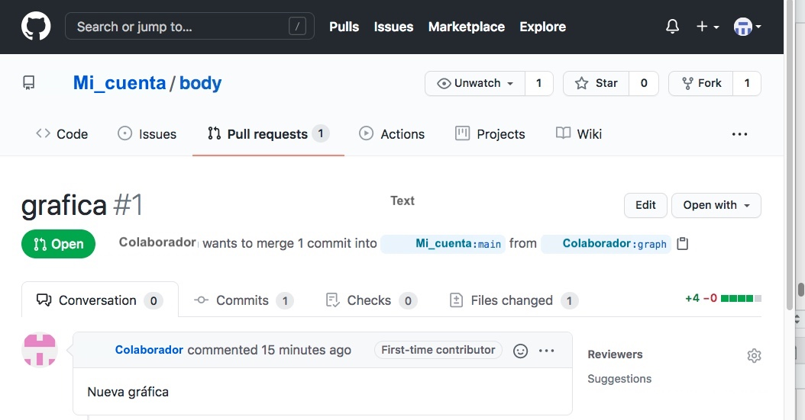
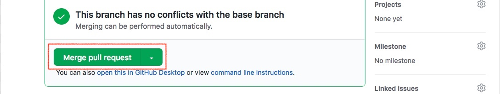
- Ahora utiliza Confirm merge
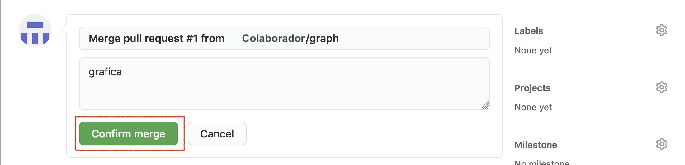
7.5.4 Sincronización final del fork
Tu colaborador ha aceptado tu Pull Request. Tu cotribución ya está en la rama main del repositorio upstream. Ahora debes actualizar la rama main de tu fork con los mismos cambios.
En GitHub ve a la la rama main del fork y utiliza a Fetch upstream ( Link al fork ).
Ve a la terminal de Linux/Mac y actualiza la copia local del fork. Primero ve a la rama main.
git checkout main- Y acualiza la rama main con el contenido del repositorio origin.
git pull origin main- Una vez que tus cambios están añadidos a la rama main en los repositorios local, origin y upstream puedes eliminar la rama graph
- Para eliminarla de la copia local del fork
git branch -d graph- Para eliminarla en el repositorio origin (en GitHub)
git push origin --delete graph